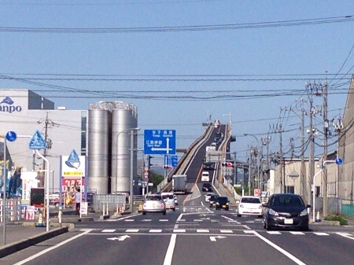

香珈珈琲です。
今日は、先日鳥取と松江に行ってきたので
山陰の珈琲についてお話します。
広島から山陰は高速道路が整備されてとても近くなりましたね。
なので、最近は時々山陰へ行ってます。
今回は、
大根島というところにある「べたふみ坂」を通りました。
軽四輪の車だとアクセル全開(ベタ踏み)しないと登れない坂として
有名になったところです。

さて、鳥取の「すなば珈琲」を知ってますか?
鳥取はスターバックスが最後にできた県として
ニュースに取り上げられましたね。
このスターバックスを黒船に例えて
このコピーがすごいです。
http://www.sunaba.coffee/
「人生には
時に思いもよらない形で「黒船」が襲来してきます。
でも、決してあきらめてはいけません。
無い知恵をしぼり、胸に秘策を抱えて迎え撃ちましょう。
きっと、ピンチがチャンスに変わります。」
サイフォンで入れる珈琲がいいですね。
次に、島根です。
島根には、日本バリスタチャンピオンがいます。
門脇さん親子三人でそれぞれ違ったスタイルの店を経営しています。
「サルビア珈琲」
「カフェロッソ」
「カフェヴィータ」
皆さんも島根に行く機会があれば、
飲み比べで見るのも面白いですよ。
それから、松浦珈琲もお勧めです。
しかし、ここも香珈と同じように
土曜日しか店で珈琲を飲むことができません。
豆は平日の午前中購入できます。

今は、インターネットで検索すれば場所も分かりますが
私が通った頃は何も情報が無い時だったので
逆にあの頃が懐かしく思えます。
山陰のコーヒー店の共通することは、
地元を愛していることだと思います。
バリスタ日本チャンピオン世界でも二位でありながら
地元を離れずコーヒーの道をあゆみ。
山陰という商圏を考えてコーヒー豆のみ販売するスタイルなど
それぞれがコーヒーを美味しくするための工夫をしなから
地元にも愛されるための店づくりをしています。
香珈もまだまだ足りないところばかり
見習うことろが沢山あります。
私達は、家庭で美味しいコーヒーを飲んでもらえるために
私達ができることをコツコツとやっていきます。
今日も元気に営業します。